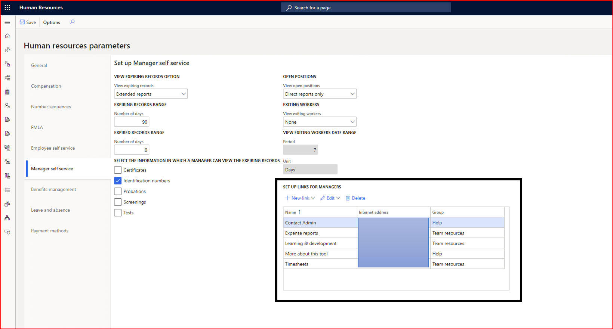

Benutzerdefinierte Links in Manager-Self-Service erstellen
Sie können benutzerdefinierte Links auf der Registerkarte Mein Team im Manager Self-Service hinzufügen. Mit dieser Funktion können Sie schnell auf wichtige Informationen zugreifen. Es ähnelt dem Hinzufügen von benutzerdefinierten Links in der Meine Information Registerkarte im Mitarbeiter-Self Service.
Die Funktion aktivieren
Um diese Funktion zu verwenden, aktivieren Sie Benutzerdefinierte Links in Manager-Self-Service im Arbeitsbereich Funktionsverwaltung. Weitere Informationen zum Aktivieren der Vorschaufunktionen finden Sie unter Funktonen verwalten.
Richten Sie benutzerdefinierte Links ein
Wählen Sie in den Human Resources Parameter Manager Self-Service aus.
Unter Richten Sie Links für Manager ein können Sie einen Link hinzufügen, bearbeiten oder entfernen. Sie können die Links auch so gruppieren, dass sie in einer Gruppe im Manager-Self-Service angezeigt werden.

Um die Links zu sehen, gehen Sie zur Registerkarte Mein Team im Mitarbeiter-Self-Service.